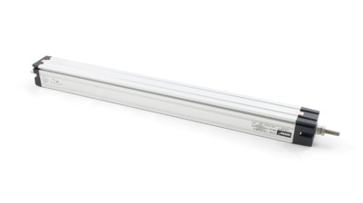

Rotation Sensor
 Product Features
Product Features
This rotary potentiometer has 300° of travel and connects to an analog input.
Product Description
The sensor can be rotated 300 degrees and outputs a number between 0 and 1000 based on the shaft position. The maximum resistance of the potentiometer is 10K ohm.
This sensor is designed to be 3.3V compatible and can interface with other products as an alternative. For example, the Java based Sentilla Perk includes side ports that are compatible with 3.3V Phidget sensors without any modifications.
Slider 60
Product Features
Ideal for user input, this slider has 60mm of travel and connects to an analog input.
Product Description
The Slider 60 is a linear potentiometer - the resistance varies linearly with the position of the slider. SensorValue varies from 0 to1000 over the 60mm travel of the slider. The maximum resistance is 10K ohms.
The sensor can be used as human input or as position feedback in a system.
Mini Joy Stick Sensor
Product Features
This two-axis joystick has a momentary pushbutton switch and connects to two analog and one digital input.
Product Description
This miniature joystick has two axes and a pushbutton. Each axis, up/down and left/right, has a potentiometer with a center value of approximately 500. When you move the Joystick from its center position the value will increase or decrease depending on the direction.
Pressing down on the Joystick pin will make a momentary contact that can be connected to a digital input on the PhidgetInterfaceKit through the terminal blocks.
Multi-turn Rotation Sensor
Product Features
This multi-turn potentiometer measures 10 full rotations, useful for input applications that require a fine adjustment. Connects to an analog input.
Product Description
The sensor measures 3600 degrees of rotation - 10 full turns. It is typically used in Human Interface Applications such as control panels.
This sensor is designed to be 3.3V compatible and can interface with other products as an alternative. For example, the Java based Sentilla Perk includes side ports that are compatible with 3.3V Phidget sensors without any modifications.
Linear Potentiometer - 75mm
Product Features
This industrial linear potentiometer has 75mm of travel and connects to an analog input.
Product Description
The series linear potentiometer is designed to provide position feedback for systems with moving parts. This potentiometer can extend to a length of 75mm and is protected by an anodized aluminium outer casing.
This sensor can be used with any device with an analog input. Simply cut and connect a 3-wire sensor cable as described in the connection section below.
Linear Potentiometer - 100mm
Product Features
This industrial linear potentiometer has 100mm of travel and connects to an analog input.
Product Description
The series linear potentiometer is designed to provide position feedback for systems with moving parts. This potentiometer can extend to a length of 100mm and is protected by an anodized aluminium outer casing.
This sensor can be used with any device with an analog input. Simply cut and connect a 3-wire sensor cable as described in the connection section below.
Linear Potentiometer - 200mm
Product Features
This industrial linear potentiometer has 200mm of travel and connects to an analog input.
Product Description
The series linear potentiometer is designed to provide position feedback for systems with moving parts. This potentiometer can extend to a length of 200mm and is protected by an anodized aluminium outer casing.
This sensor can be used with any device with an analog input. Simply cut and connect a 3-wire sensor cable as described in the connection section below.
Linear Potentiometer - 300mm

Product Features
This industrial linear potentiometer has 300mm of travel and connects to an analog input.
Product Description
The series linear potentiometer is designed to provide position feedback for systems with moving parts. This potentiometer can extend to a length of 300mm and is protected by an anodized aluminium outer casing.
This sensor can be used with any device with an analog input. Simply cut and connect a 3-wire sensor cable as described in the connection section below.
Rotary Potentiometer
Product Features
This industrial rotary potentiometer can rotate continuously and connects to an an analog input.
Product Description
The WDA rotary potentiometer allows positional feedback for a rotating part in your application. It can also be used as a dial to control variables such as volume, brightness, or sensitivity.
It has 360° of mechanical travel and 345° of electrical travel, meaning that it can be used for measuring continuous rotation with a small blind spot between each rotation.
This sensor can be used with any device with an analog input. Simply cut and solder a 3-wire sensor cable as described in the connection section below.
To attach this potentiometer to the shaft of a motor or another device, we recommend one of the following shaft couplers:
- Spiral Beam Coupling 6-6mm
- Jaw Coupling Half 6mm
We Provide:
- To be accessible, friendly, and helpful at all times.
- To answer the phone when you call, 24/7/365.
- Reply to your emails and support tickets within 24 hours.
- To provide timely information about new hardware.
- To provide all design documentations.
Please fulfill following request form to get more information!